夜の画面（2版）
11/8 23時の決定（案B「夜の操縦席」を夜だけのアプリ全体の見た目に）を受けた画面案。
- 夜だけ外す決まり：「画面全体を黒にしない」だけ。ほかの決まり（ゴシック体・角丸カード＋薄い影・黒い区切り線なし・ピル型・地図は航空図風・出発案内板は近い空港のコードと最近の印だけ）は守った
- 本文はふだんの書体。計器の字（等幅）は数字だけ。光らせるのは1画面に主役の数字1〜2つだけ
- 光る色は2色：緑＝主役の数字・入 琥珀＝いまの場所・選んでいるもの・注意。JAL赤・ANA青は夜は使わない（便名の字で分ける）
- 色の決め方は tokens.css（今の色の変数に重ねる形）と tokens.md
ON／OFF 5版（11/9・本人が ON／OFF に決定、review-3 と PM の指示 5時40分を受けて）← 本人に見せるのはこちら
- アプリ（feat/all-in-tabs 2e57613 の写真 15・16・18・21）の形に合わせた：題の横に「数/5 5つまで」・説明1行「OFF で隠れます。≡ で並べ替え。」・題と完了はシートの上に固定して一覧だけ送る・OFF の行は2行で絵の列をそろえる・元に戻すの帯は画面の下に浮く
- 入れ替え：OFF の行の2行目を「ON にすると外すタブを選びます」に置きかえ（行の高さは同じ）。選ぶピルは縁だけに絵つき、「やめる」は縁のない薄い地のピル。夜の帯は縁だけ、昼はアプリと同じ薄い黄色
- 「全部乗せに戻す」は押せるので強い字（昼は紺）。ホームに出すものはスイッチの右に 16px、タブ帯の地を透けない色に
- 夜の2版も直した：主ボタン（01b・08・10）を白い強い字と縁に（11/9 本人の決定）。運用の札を「推定」「予想」に（04「いま使っている滑走路（推定）」、04b「離陸予想」「34R から離陸（予想）」、注意書きに「保証はできません」）
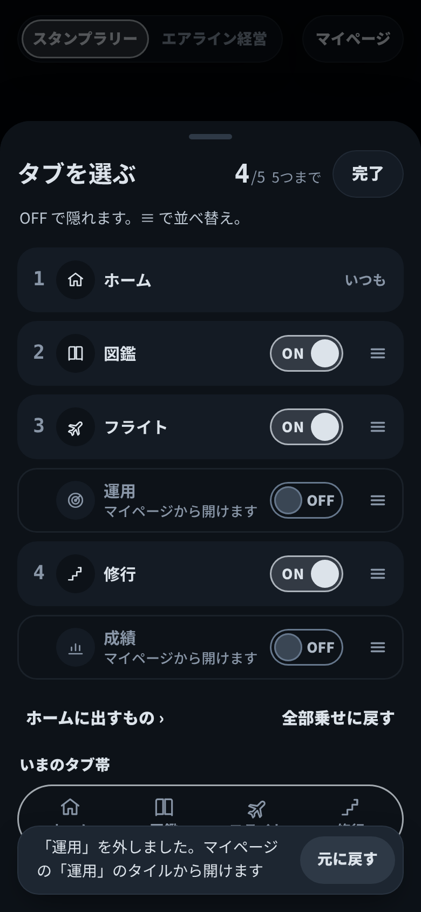
07-tabs-v5-onoffタブを選ぶ（夜）「運用」を OFF にした直後。4/5・帯は下に浮く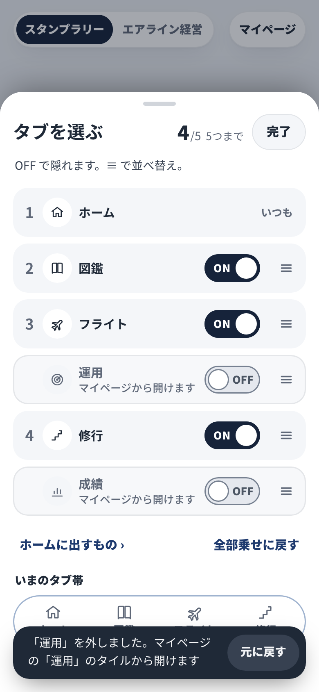
day-C1-tabs-onoff-v5タブを選ぶ（昼）同じ形の昼。アプリの写真16と並べる用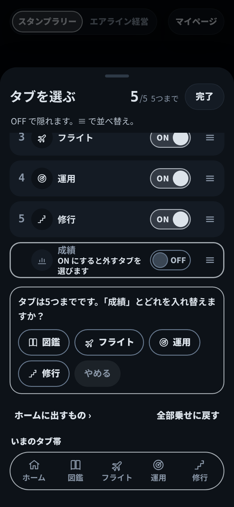
07c-tabs-v5-swap入れ替え（夜・5／5）題と完了は残り、一覧だけ帯まで送る。帯は縁だけ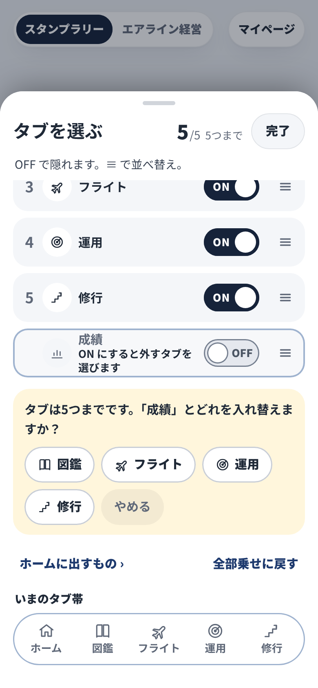
day-C3-tabs-swap-v5入れ替え（昼・5／5）昼は薄い黄色の地。ピルに絵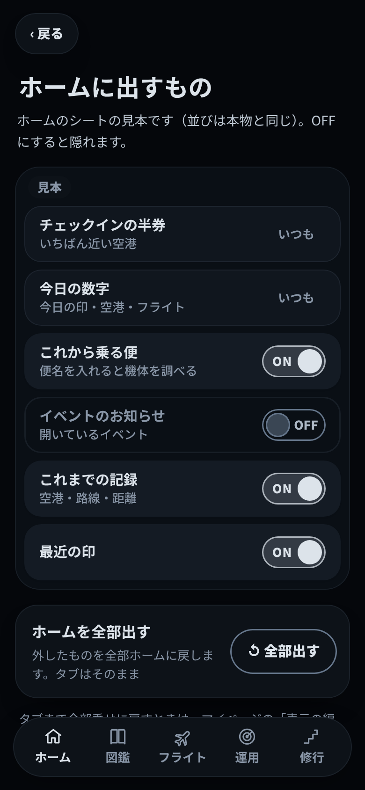
07b-home-blocks-v5-onoffホームに出すもの（夜）スイッチの右に余白・タブ帯は透けない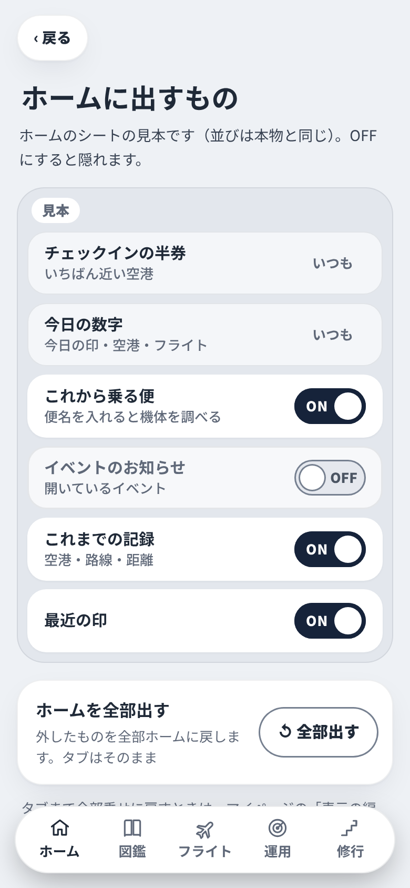
day-C2-home-blocks-onoff-v5ホームに出すもの（昼）同じ直しの昼ON／OFF の試し 4版（記録。5版に置き換え）
- 並びをアプリ（feat/all-in-tabs）にそろえた：番号・絵・名前・スイッチ・≡（右端）。OFF の行にも ≡。「全部乗せに戻す」は右の字のリンク。下のタブ帯はシートの下に隠し「いまのタブ帯」で見せる
- OFF にしたタブは押した場所に残す（下へ動かさない）。並びを詰めるのは完了のあと
- OFF のスイッチの縁とつまみの縁を 3:1 以上に（昼 #768090・夜 #66778C）。行は薄くしてもスイッチの濃さは落とさない（tokens.md の4版）
- 5／5 のときに OFF を ON にしたときの入れ替えを1枚ずつ（OFF の行に「ON で外すタブを選びます」）
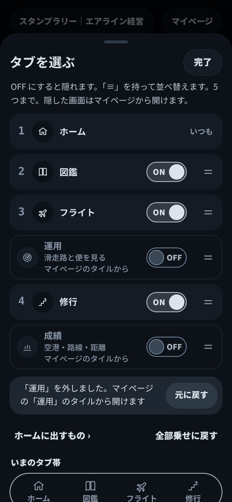
07-tabs-v4-onoffタブを選ぶ（夜・OFF はその場に）「運用」を OFF にした直後。番号だけ消えて同じ場所に残る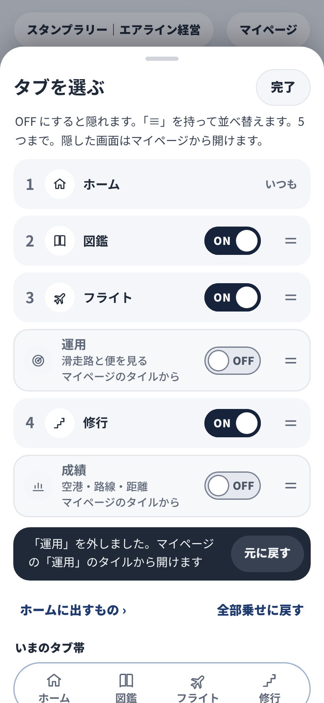
day-C1-tabs-onoff-v4タブを選ぶ（昼・OFF はその場に）同じ部品の昼。ON＝紺・OFF＝灰色と濃い縁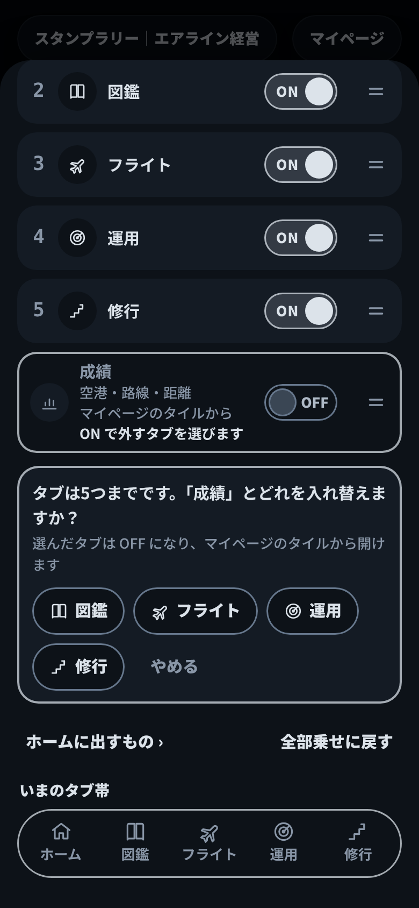
07c-tabs-v4-swap入れ替え（夜・5／5）成績を ON にしたとき。どれと入れ替えるかを聞く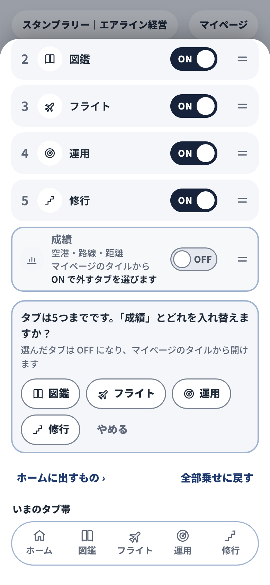
day-C3-tabs-swap-v4入れ替え（昼・5／5）同じ形の昼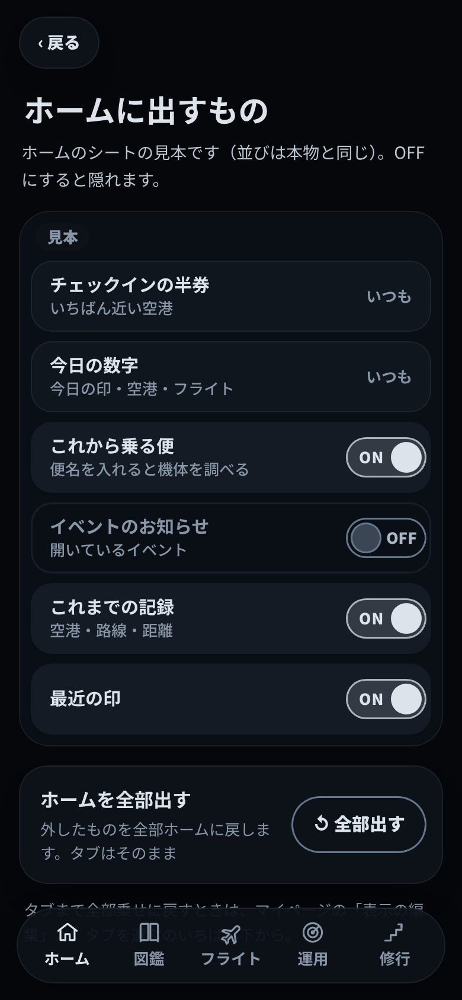
07b-home-blocks-v4-onoffホームに出すもの（夜）アプリの並び。いつもの行は薄い地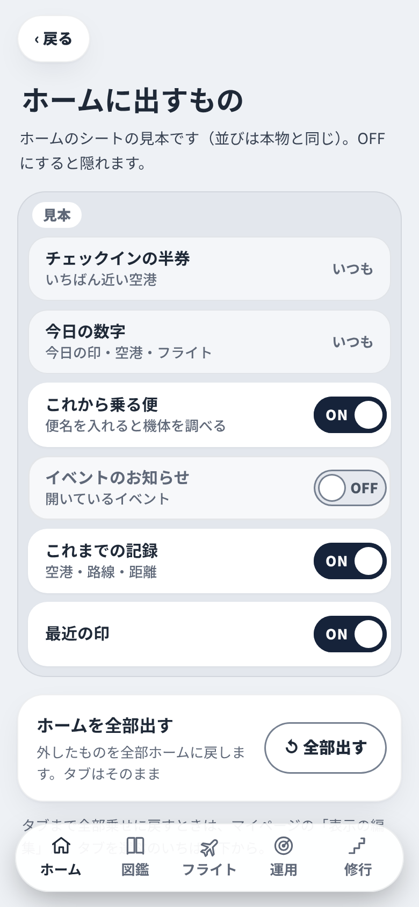
day-C2-home-blocks-onoff-v4ホームに出すもの（昼）半券と今日の数字を薄い地に（前は濃い紺）ON／OFF の試し 3版（記録。4版に置き換え）
- タブを選ぶ・ホームに出すものの各行を、−／＋ 出す から ON／OFF のスイッチ（字の札つき）にした。昼と夜で同じ部品、色だけ変わる
- 色だけに頼らない：つまみの位置・札の字・行の字の濃さで分かる。夜は琥珀と緑を使わない
- 試しの形なので、写真を本人に見せてから決める。決まるまで 07-tabs-v2 は残す
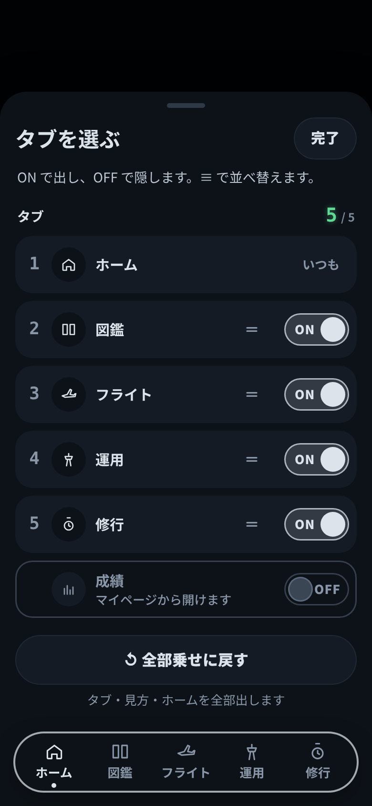
07-tabs-v3-onoffタブを選ぶ（夜・ON／OFF）ホームは「いつも」。OFF の成績は番号と ≡ なしで下に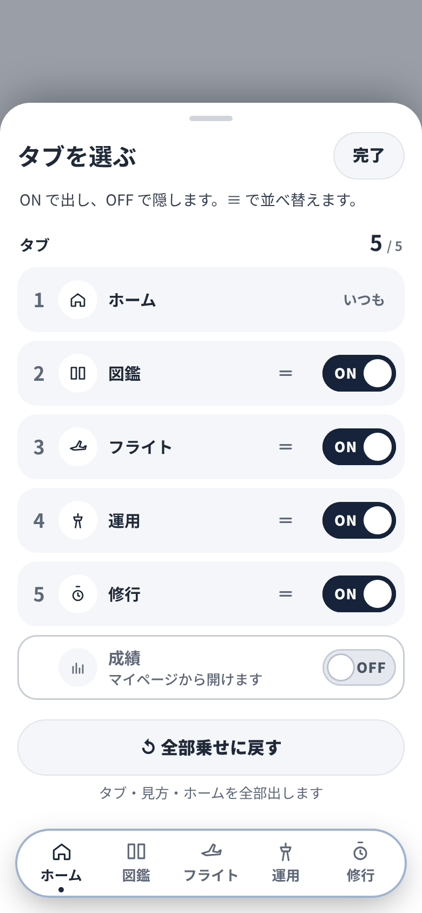
day-C1-tabs-onoffタブを選ぶ（昼・ON／OFF）同じ部品の昼。ON＝紺・OFF＝灰色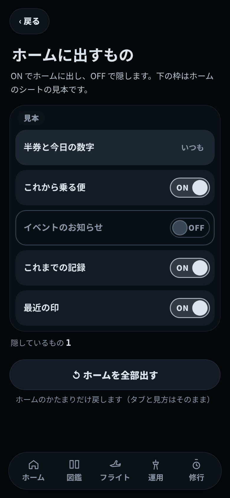
07b-home-blocks-v3-onoffホームに出すもの（夜・ON／OFF）見本の各行にスイッチ。OFF の行は同じ場所に縁だけで残す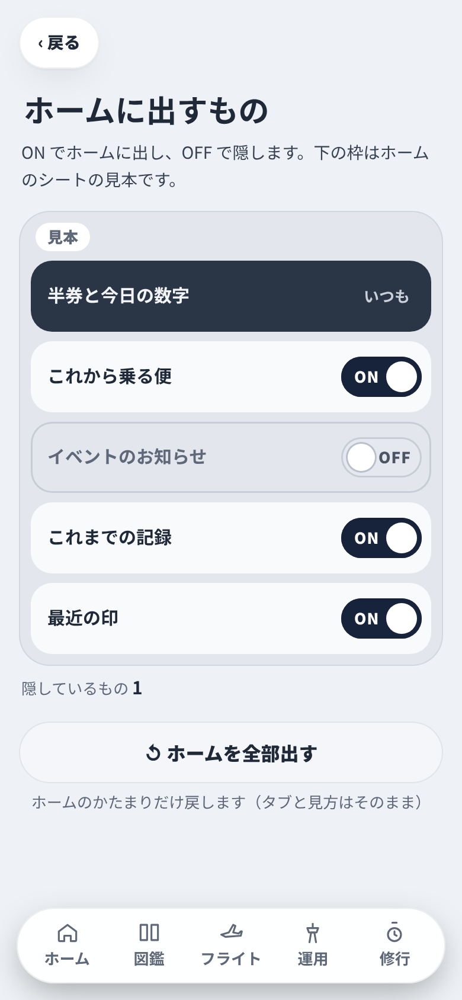
day-C2-home-blocks-onoffホームに出すもの（昼・ON／OFF）C2-v2 の − と「外したもの」をスイッチに2版（11/9・改善担当の review-1 と PM の指示 11/9 0時40分を受けて）
- 4版の直し（11/9 PM の指示 3時35分の4）：タブ帯の絵を本番のもの（本・飛行機・的・階段）に・タブ帯の地を透けない色に・04 の図に4本の滑走路（05 も）・04b の文を北風の向きに合わせた（34R の離陸）・01／01b／10 の地図の出典を方位の丸の下へ・01b にも「スタンプラリー｜エアライン経営」・02 の見出しを「集めた空港 14」「まだの空港 72」・02b の登録記号を見本（JA000X〜）に、凡例は「★ 記録した ☆ まだ」
- ホームは今の本番の並びのまま色だけ夜に。右上の「夜の画面」のピルはやめた
- 琥珀は「いま・次」（いまの場所・いちばん近い時刻）と主ボタンの字と縁だけ。選んでいるピル・タブ・設定は色を使わず強い字＋細い縁
- 琥珀の塗りの大きい面をやめた（主ボタンは地に琥珀の字と縁）。光る数字は1画面3つまで
- 09（切り替えのシート）はやめ、06 に1行。図鑑に特別塗装機の見方（02b）を足した
- 色の決め方：tokens.css・tokens.md（2版に更新。自動の切り替えは次の日の出・日の入りまで戻さない）
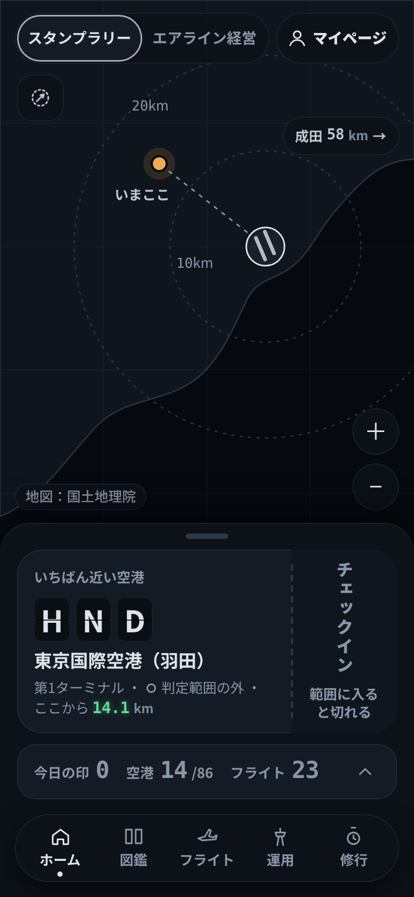
01-home-v2ホーム（夜・2版）今のホームの並び（切り替え・マイページ・方位・＋−・半券・今日の数字）のまま色だけ夜。距離は数字と合わせ、成田は縁の札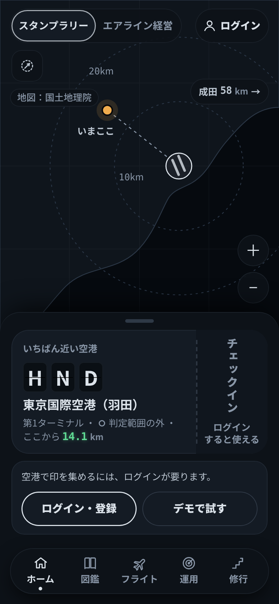
01b-home-guest-v2ホーム・ログインなし右上「ログイン」、シートに「ログイン・登録｜デモで試す」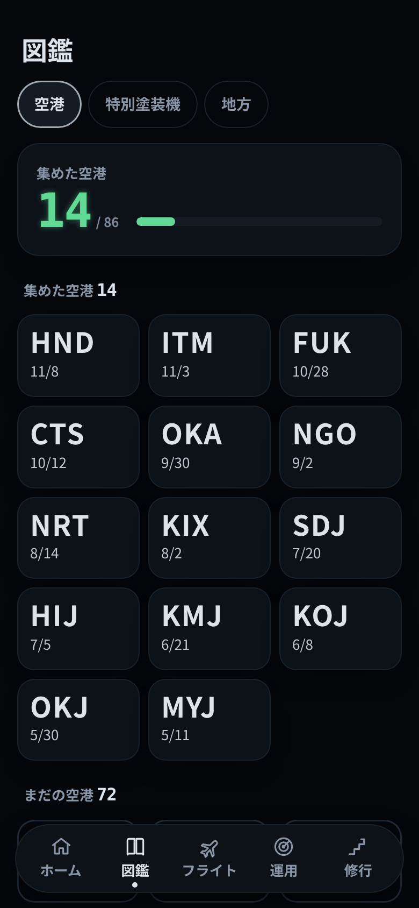
02-zukan-v2図鑑・空港見出しは「集めた空港 14」「まだの空港 72」。上の 14 / 86 と数が合う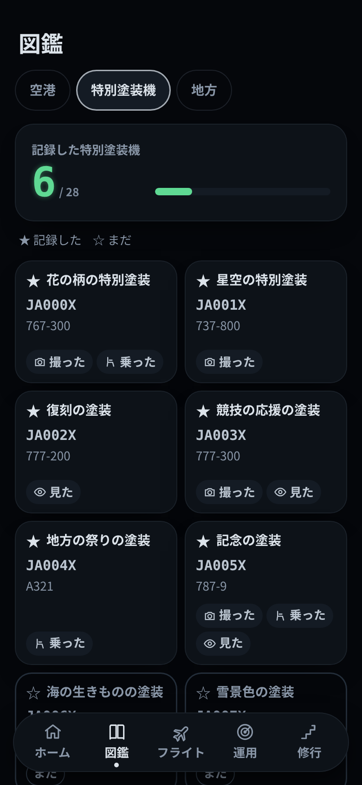
02b-zukan-special-v2図鑑・特別塗装機（新）★は琥珀にせず形と強い字。登録記号は見本（JA000X〜）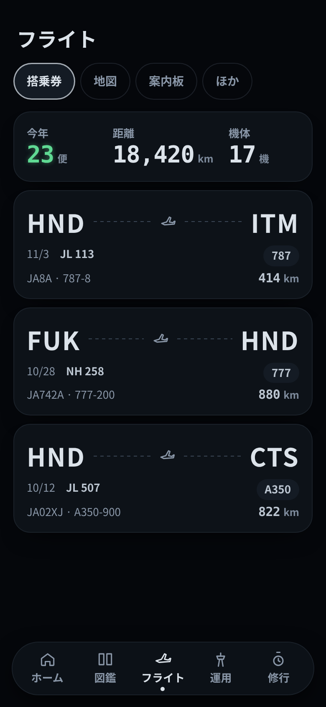
03-flight-v2フライトkm と機の間をあけた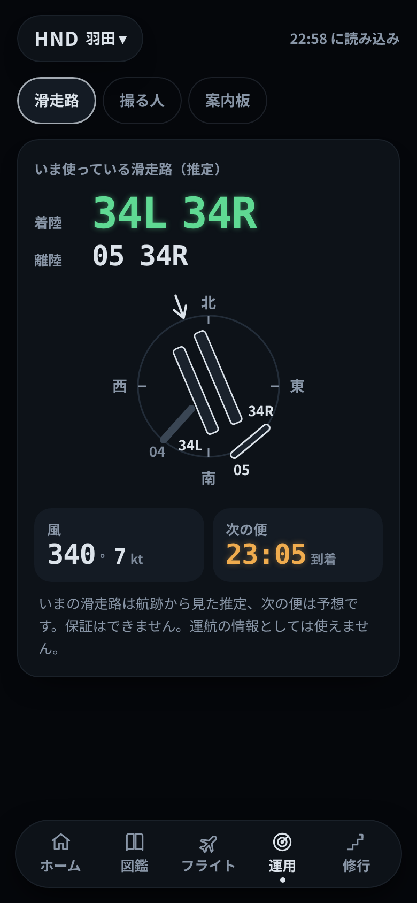
04-ops-v2運用・滑走路着陸 34L・34R を同じ重さ。図に4本（使っている 34L・34R・05 は強い字）。琥珀は次の便だけ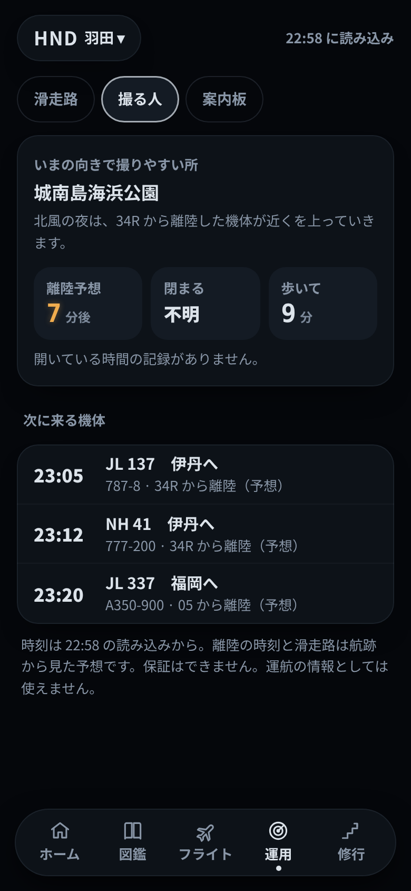
04b-ops-spot-v2運用・撮る人北風なので城南島は「34R の離陸機」。22:58→23:05＝7分後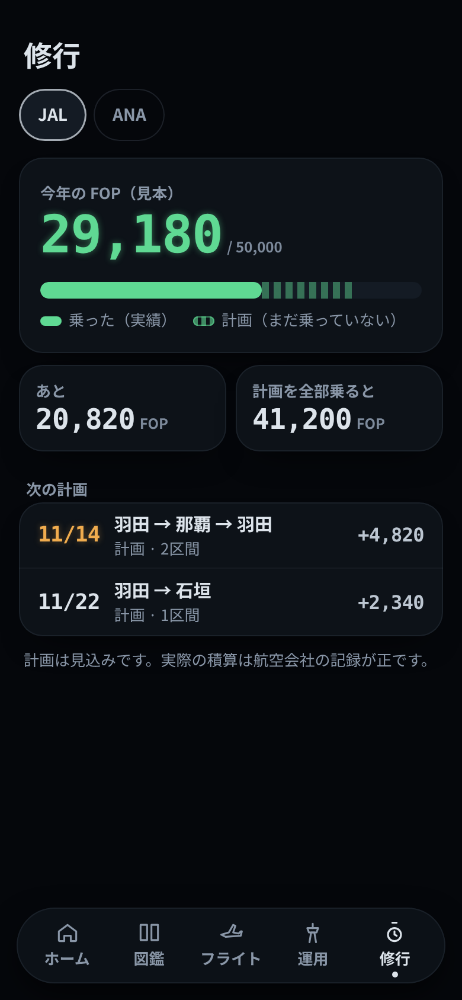
05-shugyo-v2修行選んだピルだけそろえた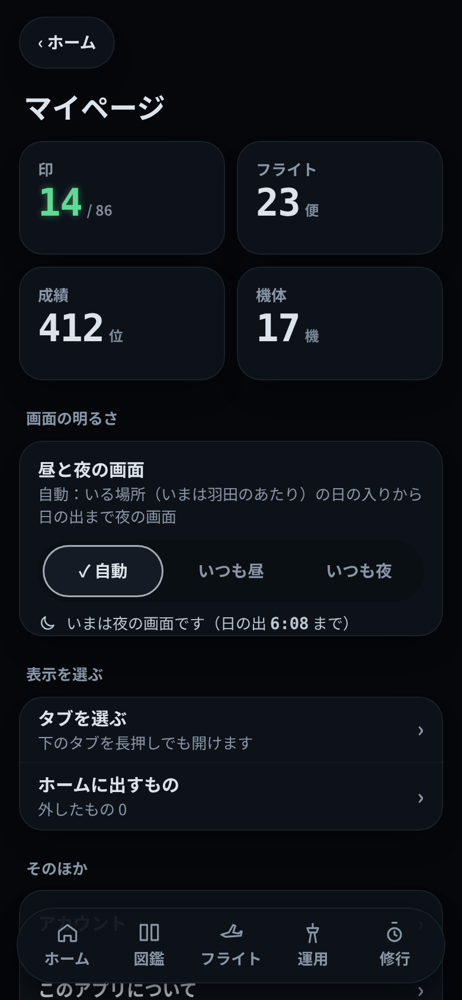
06-mypage-v2マイページいまの状態の1行を足し、09 はやめた。選んだ設定は ✓＋細い縁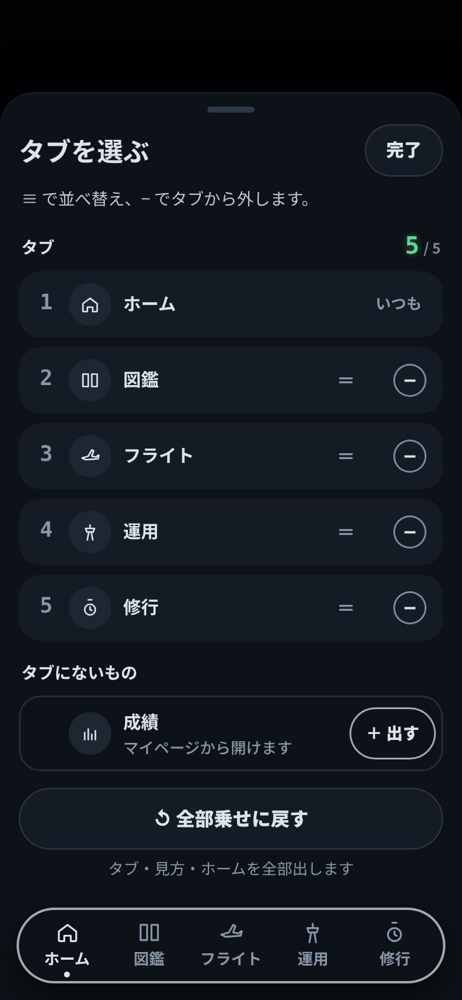
07-tabs-v2タブを選ぶ昼の C1-v2 と同じ −／＋ 出す／≡ のまま色だけ夜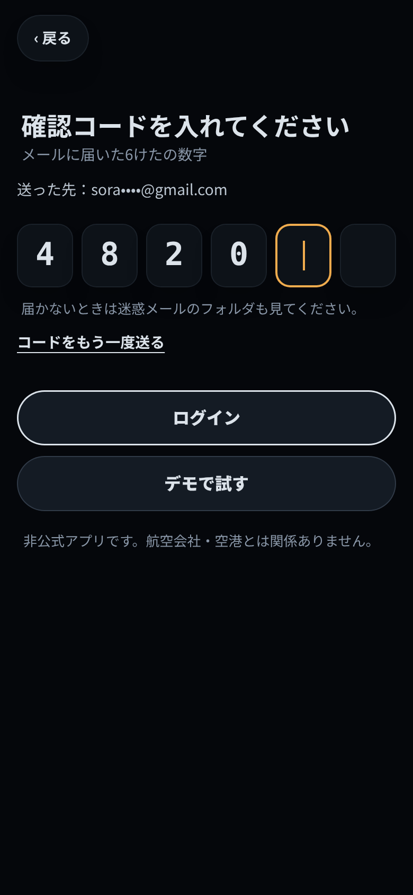
08-login-v2ログイン確認コードは光らせない。ログインは琥珀の字と縁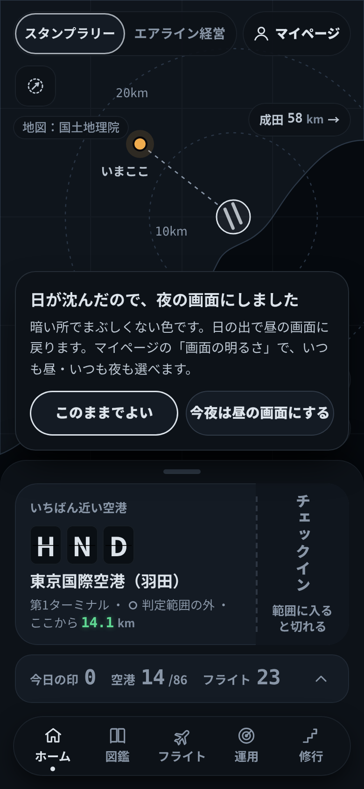
10-first-night-v2はじめての夜のカードシートの上に重ね半券を残す。「今夜は昼の画面にする」1版（11/8・比べる用）
 01-homeホーム（夜）ホーム：地図とシート。地図は航空図の線のまま地を暗くし、距離の円は案B の計器の円（点線）を重ねた。いまの場所と行き先の線は琥珀
01-homeホーム（夜）ホーム：地図とシート。地図は航空図の線のまま地を暗くし、距離の円は案B の計器の円（点線）を重ねた。いまの場所と行き先の線は琥珀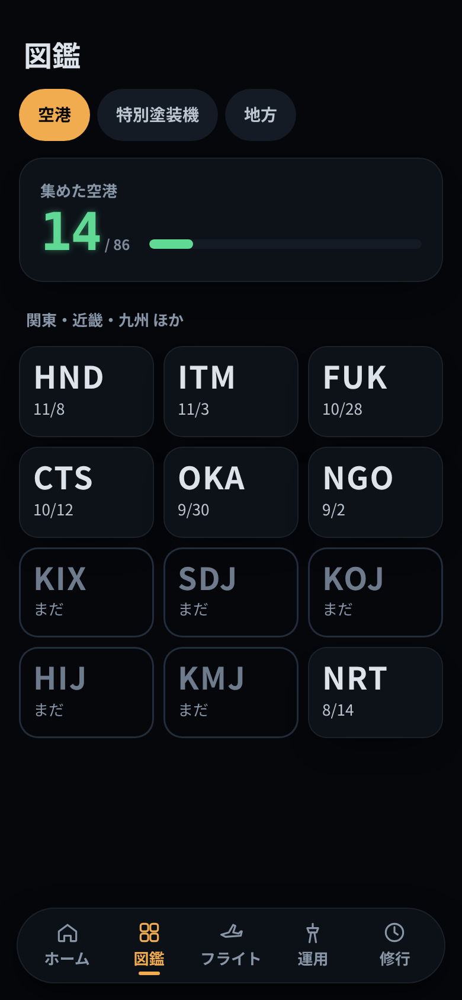
02-zukan図鑑（夜）図鑑：空港のカードの並び。集めた所はカード（枠＋薄い影）、まだの所は地を抜いて薄い枠だけ。色ではなく「日付／まだ」の字でも分かる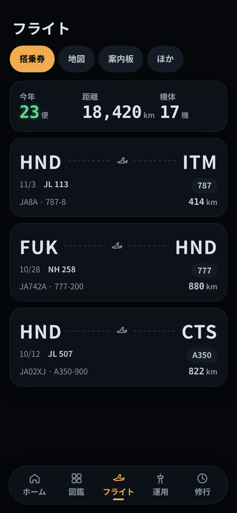
03-flightフライト（夜）フライト：搭乗券の見方。光る数字は「今年 23便」だけ。距離・機体の数は等幅で光らせない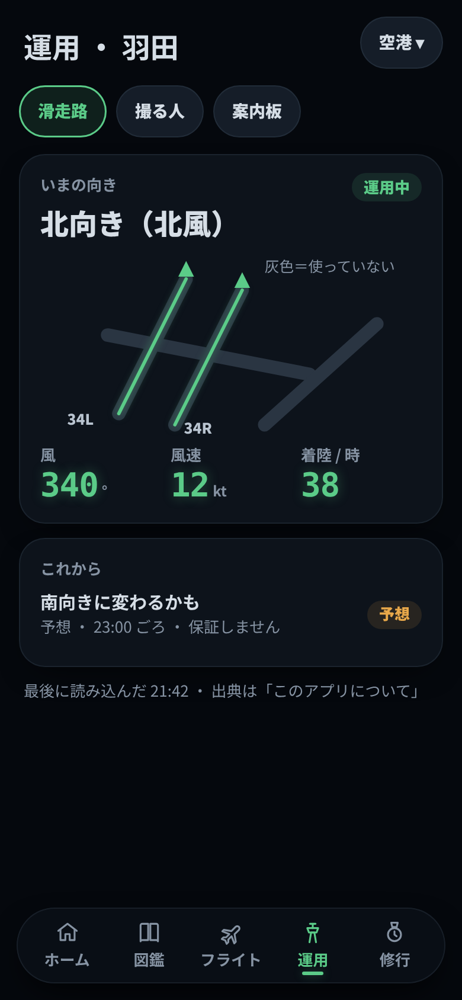
04-ops運用（夜）運用：滑走路の見方。光る数字は着陸の「34L」（緑）と風向き（琥珀＝いまの向き）の2つ。ほかの滑走路の番号は等幅のグレー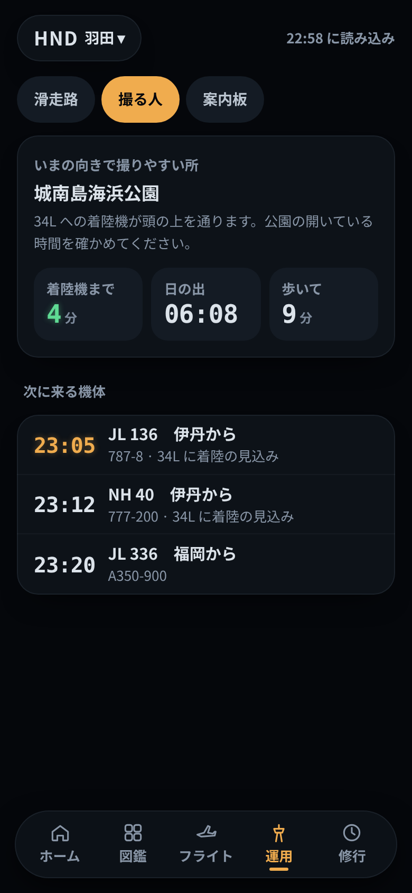
04b-ops-spot運用・撮る人の見方（夜）運用の撮る人の見方：夜は「光（順光・逆光）」の代わりに日の出の時刻を出す案（光の向きは昼の画面で出す）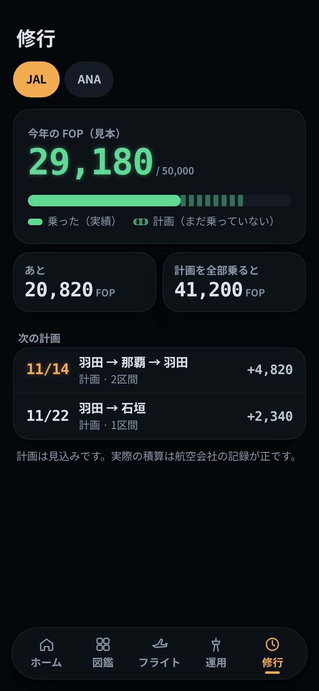
05-shugyo修行（夜）修行：実績と計画の分け方は、昼の色（予定＝薄い金・計画＝薄い青）を夜は使わず、塗り（実績）と縞（計画）＋凡例の字で分けた。光る色を2色に収めるため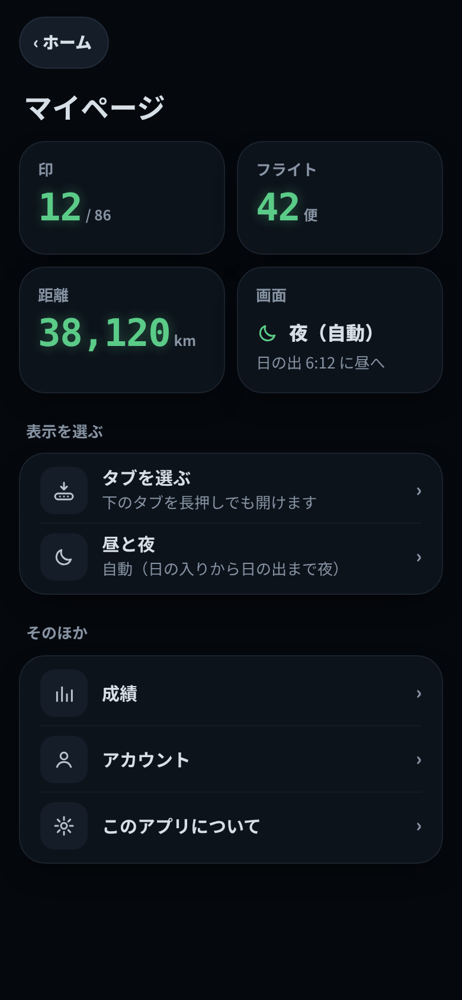
06-mypageマイページ（夜）マイページ：タイル。光る数字は「印 14」だけ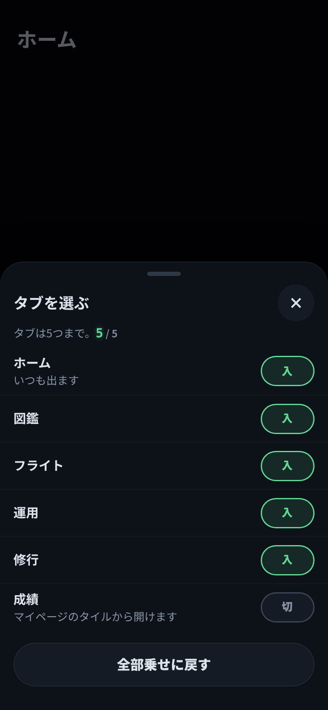
07-tabsタブを選ぶ（夜）タブを選ぶ（2版の C1-v2 と同じ中身）。夜は出す・隠すを、案B の押しボタンの「入／切」の札にした。入＝緑の枠と字、切＝灰色の枠と字。色だけでなく字でも分かる 08-loginログイン・確認コード（夜）ログイン：確認コード（6けた）の入力。入れた数字だけ光る緑、いま入れる枠は琥珀の枠
08-loginログイン・確認コード（夜）ログイン：確認コード（6けた）の入力。入れた数字だけ光る緑、いま入れる枠は琥珀の枠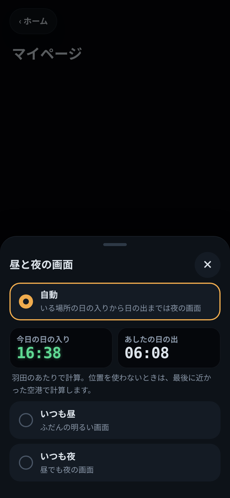
09-switch昼と夜の切り替え（夜）ホームの右上「夜の画面」のピル（01）か、マイページの「昼と夜の画面」の行から開くシート。マイページの中のピル（06）と同じ3つで、こちらは説明つき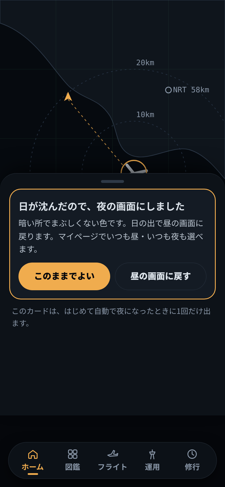
10-first-nightはじめて夜の画面になったときはじめて自動で夜になったときに、ホームのシートのいちばん上に1回だけ出すカード（案）。急に黒くなって驚かないように